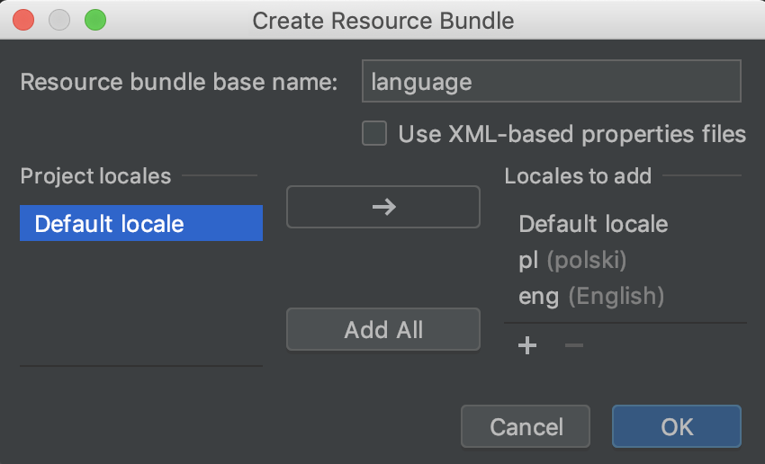
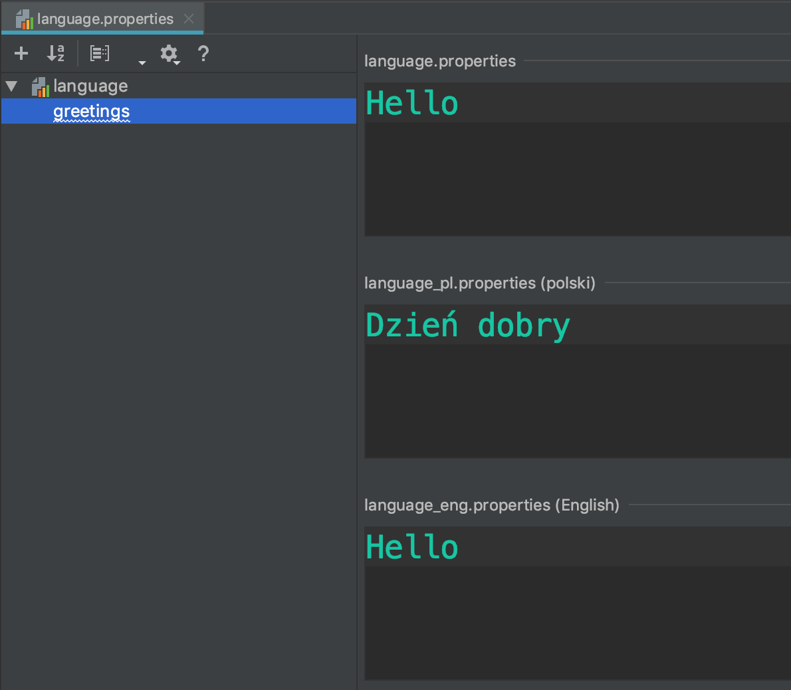

Stwórz folder w src/main o nazwie resources
Oznacz go - prawy przycisk, Mark directory as -> Resources Root
Stwórz swój zasób językowy: prawy przycisk, New -> Resource Bundle
Nazwij go (np. languages) i wybierz lokalizacje które Cię interesują (eng, pl)
Nową właściwość (property) możesz dodać na dwa sposoby - ręcznie w zakładce text lub automatycznie przez IDE
Stworzenie resource
Stworzenie klasy enumowej
Controller do języków
Zastosowanie w JSP (flagi?)
Zrobić to na nowym projekcie
Stworzenie resource
Stworzenie klasy enumowej
Controller do języków
Zastosowanie w JSP (flagi?)
Zrobić to na nowym projekcie